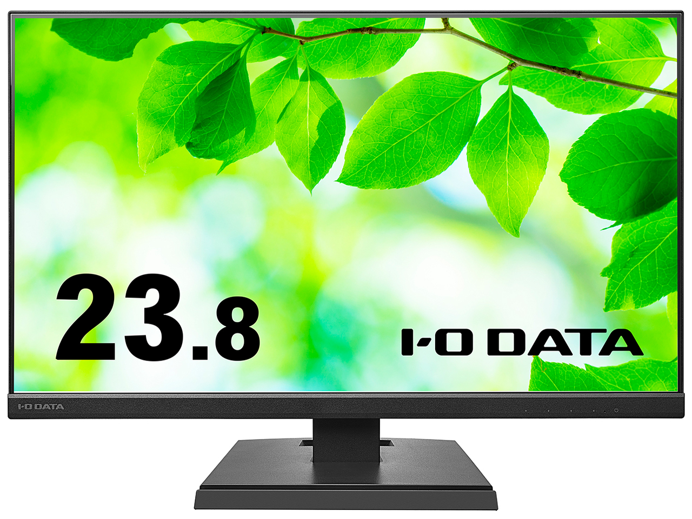
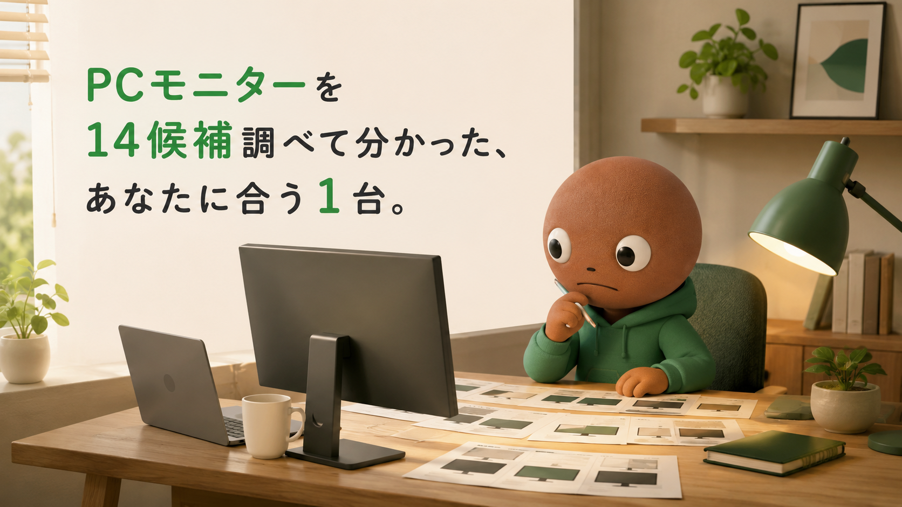
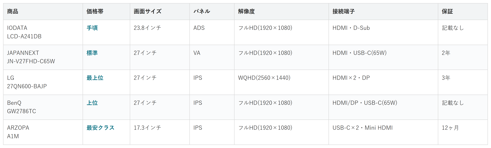

Amazonで見るノートPCの画面だけで仕事をしていて、資料とチャットの切り替えがストレスな人へ
その1画面、
狭くない？
PCモニター14候補を調査。価格・パネル・解像度・接続端子から、選び方の違う5商品を比較しました。
自分に合うモニターを探す
この記事はAmazonアソシエイト・プログラムの参加者として、紹介料を得る場合があります（PR）。仕様は調査時点の情報です。
14候補から、選び方の違う5商品に絞りました。まずは気になる1台へ。向いている人・向いていない人と、低評価レビューもまとめています。
14候補を調査
5商品に厳選
低評価レビューも確認済み
結論から先に言うと：
あなたの使い方に合う、1台を。
横にスワイプして、5商品を見比べる
選び方の基準は3つ
調べてわかったのは、基準はシンプルでした。
1つ目は「接続端子」。HDMIか、USB-Cで給電しながら映像出力できるかです。
2つ目は「パネルと解像度」。IPSかVAかフルHDかWQHDかで、画面の広さと見え方が変わります。
3つ目は「スタンドの可動域」。高さ調整やピボット（縦回転）ができると姿勢に合わせやすくなります。
価格帯には、かなり幅がありました。
比較表

価格帯・画面サイズ・パネル・解像度・接続端子・保証の比較（価格帯は最安クラス〜最上位の5段階）
IODATA LCD-A241DB
- 手頃
- 画面サイズ：23.8インチ
- パネル：ADS
- 解像度：フルHD（1920×1080）
- 接続端子：HDMI・D-Sub
- 保証：記載なし
JAPANNEXT JN-V27FHD-C65W
- 標準
- 画面サイズ：27インチ
- パネル：VA
- 解像度：フルHD（1920×1080）
- 接続端子：HDMI・USB-C（65W）
- 保証：2年
LG 27QN600-BAJP
- 最上位
- 画面サイズ：27インチ
- パネル：IPS
- 解像度：WQHD（2560×1440）
- 接続端子：HDMI×2・DP
- 保証：3年
BenQ GW2786TC
- 上位
- 画面サイズ：27インチ
- パネル：IPS
- 解像度：フルHD（1920×1080）
- 接続端子：HDMI/DP・USB-C（65W）
- 保証：記載なし
ARZOPA A1M
- 最安クラス
- 画面サイズ：17.3インチ
- パネル：IPS
- 解像度：フルHD（1920×1080）
- 接続端子：USB-C×2・Mini HDMI
- 保証：12ヶ月
向いてる人
- 初めて外付けモニターを試したい人
- 価格を抑えたい人
向いてない人
- 配線を1本にまとめたい人
選ぶ決め手とにかく安く試したいなら、この1台です。
低評価レビューも見ました
高さ調整ができないこと、スピーカー音質に期待しにくいこと、USB Type-CやDisplayPortが無いことが購入前に確認しておきたい点として挙げられています。スピーカー音質については複数のレビューで指摘されており、実用的とは言い難いようです。
LCD-A241DBは
据え置き型では
一番手頃です。
23.8インチのADS
パネルで、解像度は
フルHD(1920×1080)。
リフレッシュレートは75Hz、
輝度は250cd/㎡、
応答速度は5msです。
入力端子はHDMIと
D-Subの2系統。
VESA100×100mmに
対応しているので、
モニターアームも
後から取り付けられます。
向いてる人
- ノートPCの充電器を持ち歩きたくない人
- 配線をすっきりさせたい人
向いてない人
- 画面の広さを重視したい人
選ぶ決め手配線をすっきりさせたいなら、この1台です。
低評価レビューも見ました
今回検索した範囲では、具体的な低評価やデメリットの口コミはあまり見つかりませんでした。USB Type-Cが映像出力だけでなく給電にも対応している点や、アフターサポートの良さを評価する声が目立ちます。一部、USB Type-C接続時にPC本体への給電が機能しなかったという声もありました。
JN-V27FHD-C65Wは
USB Type-Cケーブル
1本で、映像出力と
最大65W給電が
同時にできます。
27インチのVAパネルで、
コントラスト比は
4000:1。
解像度はフルHD、
リフレッシュレートは
75Hzです。
VESA75×75mmに対応し、
2年保証が付きます。
向いてる人
- 資料とチャットを並べて作業したい人
- 複数ウィンドウを広く使いたい人
向いてない人
- 価格を抑えたい人
選ぶ決め手画面を広く使いたいなら、この1台です。
低評価レビューも見ました
色の精度を高めるモードが無く、標準設定では白が緑や青っぽく感じるという指摘があります。スタンドは高さ調整・左右角度調整・ピボットができず上下角度のみで、スピーカーも非搭載です。USB-C端子が無い点を惜しむ声もありました。
参考：タロウスタイル
27QN600-BAJPは
解像度はWQHD
(2560×1440)。
フルHDの約1.8倍の
情報量を、画面に
表示できます。
27インチのIPS
パネルで、輝度は
350cd/㎡。
sRGB99%、HDR10にも
対応しています。
入力端子はHDMI×2と
DisplayPort×1。
3年保証と、
輝点保証が
付いています。
向いてる人
- 目の疲れが気になる人
向いてない人
- 価格を抑えたい人
選ぶ決め手目の疲れ対策を最優先するなら、この1台です。
低評価レビューも見ました
解像度がフルHDにとどまり、3Kや4Kのような高精細さが無い点が惜しいという声がありました。同価格帯で解像度の高い姉妹モデル（GW2790T）もあり、精細さを重視する場合は比較検討の余地があるという指摘です。
参考：PCWorld
GW2786TCは
輝度自動調整機能で、
部屋の明るさに合わせて
画面の明るさが
変わります。
ブルーライト軽減と
フリッカーフリーにも
対応しています。
27インチのIPS
パネルで、
リフレッシュレートは
100Hzです。
USB Type-Cで
65W給電しながら、
ノイズキャンセリング
マイクも使えます。
高さ調整に
対応しています。
向いてる人
- デスクが狭い人
- 出張先やカフェでも2画面にしたい人
向いてない人
- 大きい画面（27インチクラス）の方が欲しい人
選ぶ決め手持ち運びを重視するなら、この1台です。
低評価レビューも見ました
920gと5商品の中では重めで、日常的に持ち歩くというより据え置きのサブディスプレイ向きという指摘があります。60Hz・フルHDのため、画面サイズの割に精細感は控えめという声も。内蔵バッテリーが無くPC等からの給電が必須である点も、購入前に確認しておきたいポイントです。
17.3インチで、
重さは約920g。
厚さ9.3mmの薄型。
据え置きのサブ
ディスプレイとしても
使いやすいです。
解像度はフルHD、
輝度は300cd/㎡。
USB Type-C×2と
Mini HDMIで
接続できます。
内蔵バッテリーは無く、
PC等から給電しながら
使う設計です。
14候補をどう絞った？ 調査の経緯を見る
在宅ワークが増えて、ノートPCの画面だけで仕事をする日が増えました。
資料とチャットを何度も切り替えるのが地味にストレスで、私も外付けモニターを検討し始めました。
種類が多すぎて、正直迷います。なので今回、メーカー公式サイトと価格.comで調査。低評価や要注意の商品も含めて計14候補から5商品まで絞り込みました。
各商品ごとに、向いてる人・向いてない人も調べているので、自分に合ったPCモニターを探してみてください。
14候補から5つに絞り込みました
今回、メーカー公式サイトと価格.comで調査を行いました。価格.comの満足度ランキング☆4以上は18件あり、全件を確認しました。
ただ、その多くはゲーミングモニターや有機ELなど、在宅ワーク向けとは役割がずれていました。
そこで、業務向けモデルを個別に14候補調べ、そこから5つに絞り込みました。
DellとPhilipsの4Kモニターは、LGのWQHDモデルと役割が重複するため見送りました。
Philipsは5年保証と魅力的でしたが、価格帯を分散させる方を優先しました。
iiyamaの23.8インチは、IODATAと価格帯・画面サイズが近く見送りました。
ただ、高さ調整やピボットに強い点は、選び方の基準で後述します。
Pixioは満足度ランキング1位でしたが、ゲーミング志向が強く、JAPANNEXTと価格帯が重なるため見送りました。
レビューが心配な3商品も見ました
上の14候補とは別に、レビュー件数の動きに機械的な異常が検出された商品も3つ調べました。
個別レビューの本文までは読み込んでいないため、サクラチェッカーが機械的に検出した事実だけを正直に書きます。
KTCの27インチWQHDモニターは、評価件数がカテゴリ平均の約3倍でした。
判定の前後には、1,074件もの評価が急に減っていました。
同じくKTCの別モデルも評価件数が平均の約270%でした。
Z-Edgeの27インチモニターは、サクラ度が60〜70%と高リスクの判定でした。
3つとも共通していたのは、相場より極端に安い価格と、判定時期の前後に評価数が急減するパターンでした。
調べてみて驚いたこと
14候補を比較していて、一番驚いたのはUSB-C給電の対応幅の広さでした。
同じ「USB-C端子」でも、給電できるW数が機種によって大きく違いました。
もう1つの発見は、価格と保証年数の関係でした。
Philipsは4KなのにDellよりかなり安く、5年保証も付いていました。
高いほど保証も手厚いと限らないと私は実感しました。
サクラチェッカーを調べていた時も発見がありました。
相場より極端に安いモニターほど、評価数が不自然に増減していました。
「安さの裏には理由がある」と、改めて感じました。
迷ったらこれ
ここまで読んでもまだ迷ったら、5商品の中で唯一、自動輝度調整とブルーライト軽減、高さ調整をまとめて備えたBenQ GW2786TCが最初の1台におすすめです。
USB-Cケーブル1本で映像出力と65W給電を両方まかなえるので、配線の悩みと目の疲れ対策を同時に解決できる、外しにくい選択です。
Amazonで見る→よくある質問
Q. PCモニターは何を基準に選べばいい？
A. 接続端子(HDMI/USB-C)と、パネルの解像度をまず確認するのがおすすめです。
Q. USB-C給電はどのくらい必要？
A. ノートPCの充電に必要なW数を確認し、それ以上に対応したモニターを選ぶと安心です。
Q. モニターアームを後から付けたい。
A. VESA100×100mmか75×75mmに対応しているか購入前に確認してください。
Q. 持ち運び用と据え置き用は兼用できる？
A. できますが、持ち運び用は画面がやや小さく、据え置きには27インチクラスの方が見やすいです。
こんな記事も書いてます
ミートボーの調査部屋で他の記事も見る（全本）


出典
- I-O DATA LCD-A241D シリーズ公式：iodata.jp
- 価格.com IODATA LCD-A241DB スペック：kakaku.com
- JAPANNEXT公式 JN-V27FHD-C65W：japannext.com
- 価格.com JAPANNEXT JN-V27FHD-C65W：kakaku.com
- 価格.com LG 27QN600-BAJP スペック：kakaku.com
- Amazon.co.jp LG 27QN600-BAJP 商品ページ（3年保証・輝点保証の記載確認用）：amazon.co.jp
- 価格.com BenQ GW2786TC スペック：kakaku.com
- BenQ GW2786TC 楽天公式（ベンキューダイレクト）：rakuten.co.jp
- ARZOPA公式 A1M：arzopa.com
- Dell公式 P2723QE：dell.com
- Philips 27E1N1800A/11（楽天ISダイレクト）：rakuten.co.jp
- 価格.com iiyama XUB2492HSU-B6：kakaku.com
- Pixio公式 PX248 Wave：pixiogaming.jp
- 価格.com PCモニター満足度ランキング：kakaku.com
- サクラチェッカー KTC(B0D9KGG1B6)：sakura-checker.jp
- サクラチェッカー KTC(B0DG4RKZMD)：sakura-checker.jp
- サクラチェッカー Z-Edge(B0BBZXKZ35)：sakura-checker.jp
- IODATA LCD-A241DB 低評価レビュー参考：村上@家電・ガジェットライター
- JAPANNEXT JN-V27FHD-C65W 低評価レビュー参考：Amazon カスタマーレビュー
- LG 27QN600-BAJP 低評価レビュー参考：タロウスタイル
- BenQ GW2786TC 低評価レビュー参考：PCWorld
- ARZOPA A1M 低評価レビュー参考：ガジェット沼｜デスクすっきり環境